theme_readme <- function() {
theme_minimal(base_size = 14) +
theme(
plot.title = element_text(face = "bold", size = 16),
plot.subtitle = element_text(color = "gray40"),
panel.grid.minor = element_blank(),
legend.position = "bottom"
)
}
colors <- c("total" = "#2C3E50", "white" = "#3498DB", "black" = "#E74C3C",
"hispanic" = "#F39C12", "asian" = "#9B59B6")
enr <- fetch_enr_multi(2019:2024, use_cache = TRUE)
enr_current <- fetch_enr(2024, use_cache = TRUE)
# Calculate state totals for percentage calculations
state_totals <- enr %>%
filter(is_state, grade_level == "TOTAL", subgroup == "total_enrollment") %>%
select(end_year, total = n_students)1. Louisiana added 33,000 students since 2019
Statewide enrollment grew 5.1% from 2019 to 2024, rising from 644,000 to 677,000 students.
state_trend <- enr %>%
filter(is_state, subgroup == "total_enrollment", grade_level == "TOTAL") %>%
select(end_year, n_students)
stopifnot(nrow(state_trend) > 0)
state_trend
#> # A tibble: 6 × 2
#> end_year n_students
#> <int> <dbl>
#> 1 2019 643986
#> 2 2020 624527
#> 3 2021 615839
#> 4 2022 685606
#> 5 2023 681176
#> 6 2024 676751
ggplot(state_trend, aes(x = end_year, y = n_students)) +
geom_line(linewidth = 1.5, color = colors["total"]) +
geom_point(size = 3, color = colors["total"]) +
geom_vline(xintercept = 2021, linetype = "dashed", color = "red", alpha = 0.5) +
annotate("text", x = 2021.1, y = max(state_trend$n_students), label = "COVID",
hjust = 0, color = "red", alpha = 0.5) +
scale_y_continuous(labels = comma, limits = c(0, NA)) +
labs(title = "Louisiana Statewide Enrollment",
subtitle = "5.1% growth from 2019 to 2024 (676,751 students)",
x = "School Year", y = "Students") +
theme_readme()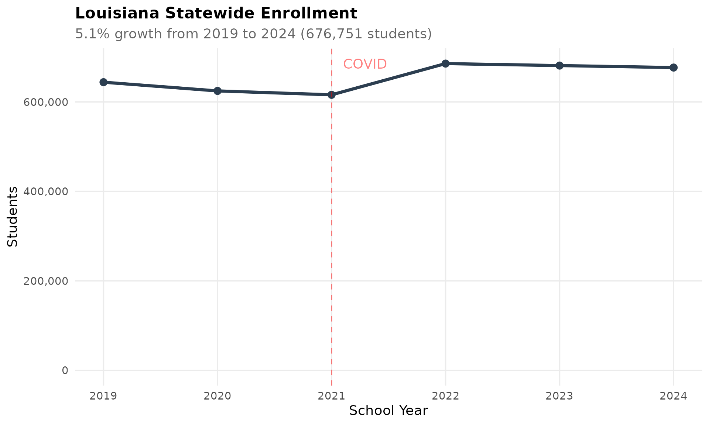
2. White students fell below Black students for the first time
White enrollment dropped from 47.1% in 2019 to 40.7% in 2024, while Black students held steady at 41.7%, making Louisiana’s public schools majority-minority.
demo <- enr %>%
filter(is_state, grade_level == "TOTAL",
subgroup %in% c("white", "black", "hispanic", "asian")) %>%
left_join(state_totals, by = "end_year") %>%
mutate(pct = n_students / total * 100)
stopifnot(nrow(demo) > 0)
demo %>% filter(end_year == 2024) %>% select(subgroup, n_students, pct)
#> # A tibble: 4 × 3
#> subgroup n_students pct
#> <chr> <dbl> <dbl>
#> 1 white 275265 40.7
#> 2 black 282521 41.7
#> 3 hispanic 77836 11.5
#> 4 asian 10745 1.59
ggplot(demo, aes(x = end_year, y = pct, color = subgroup)) +
geom_line(linewidth = 1.2) +
geom_point(size = 2.5) +
scale_color_manual(values = colors,
labels = c("Asian", "Black", "Hispanic", "White")) +
labs(title = "Louisiana Demographics",
subtitle = "White share fell from 47% to 41%, now below Black share",
x = "School Year", y = "Percent of Students", color = "") +
theme_readme()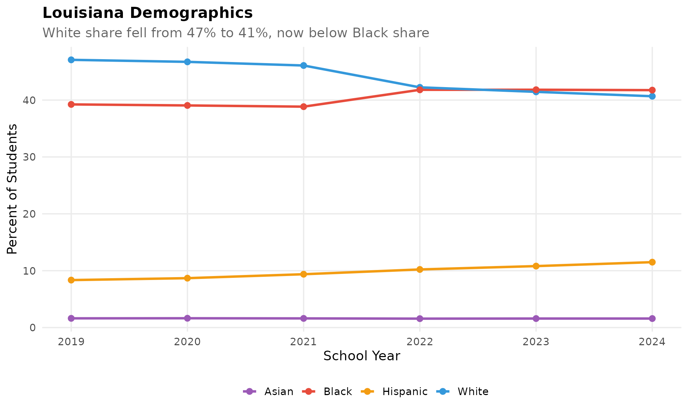
3. Hispanic enrollment surged 45% in five years
Hispanic students grew from 53,778 (8.4%) in 2019 to 77,836 (11.5%) in 2024, the fastest-growing demographic group in Louisiana schools.
hisp <- enr %>%
filter(is_state, grade_level == "TOTAL", subgroup == "hispanic") %>%
left_join(state_totals, by = "end_year") %>%
mutate(pct = n_students / total * 100)
stopifnot(nrow(hisp) > 0)
hisp %>% select(end_year, n_students, pct)
#> # A tibble: 6 × 3
#> end_year n_students pct
#> <int> <dbl> <dbl>
#> 1 2019 53778 8.35
#> 2 2020 54251 8.69
#> 3 2021 57761 9.38
#> 4 2022 70054 10.2
#> 5 2023 73627 10.8
#> 6 2024 77836 11.5
ggplot(hisp, aes(x = end_year, y = n_students)) +
geom_line(linewidth = 1.5, color = colors["hispanic"]) +
geom_point(size = 3, color = colors["hispanic"]) +
geom_vline(xintercept = 2021, linetype = "dashed", color = "red", alpha = 0.5) +
scale_y_continuous(labels = comma) +
labs(title = "Hispanic Enrollment Surging in Louisiana",
subtitle = "45% growth from 53,778 to 77,836 students (2019-2024)",
x = "School Year", y = "Hispanic Students") +
theme_readme()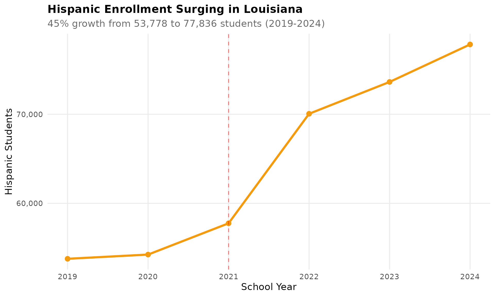
4. Jefferson Parish is Louisiana’s largest district
Jefferson Parish enrolls 47,702 students, leading all districts and outpacing East Baton Rouge (39,932) and St. Tammany (36,384).
top5 <- enr_current %>%
filter(is_district, subgroup == "total_enrollment", grade_level == "TOTAL",
district_name != "State of Louisiana") %>%
arrange(desc(n_students)) %>%
head(5)
stopifnot(nrow(top5) > 0)
top5 %>% select(district_name, n_students)
#> # A tibble: 5 × 2
#> district_name n_students
#> <chr> <dbl>
#> 1 Jefferson Parish 47702
#> 2 East Baton Rouge Parish 39932
#> 3 St. Tammany Parish 36384
#> 4 Caddo Parish 32614
#> 5 Lafayette Parish 29877
top5_names <- top5$district_name
top5_trend <- enr %>%
filter(is_district, district_name %in% top5_names,
subgroup == "total_enrollment", grade_level == "TOTAL")
stopifnot(nrow(top5_trend) > 0)
ggplot(top5_trend, aes(x = end_year, y = n_students, color = district_name)) +
geom_line(linewidth = 1.2) +
geom_point(size = 2.5) +
scale_y_continuous(labels = comma) +
labs(title = "Louisiana's Five Largest Districts",
subtitle = "Jefferson Parish leads with 47,702 students in 2024",
x = "School Year", y = "Students", color = "") +
theme_readme()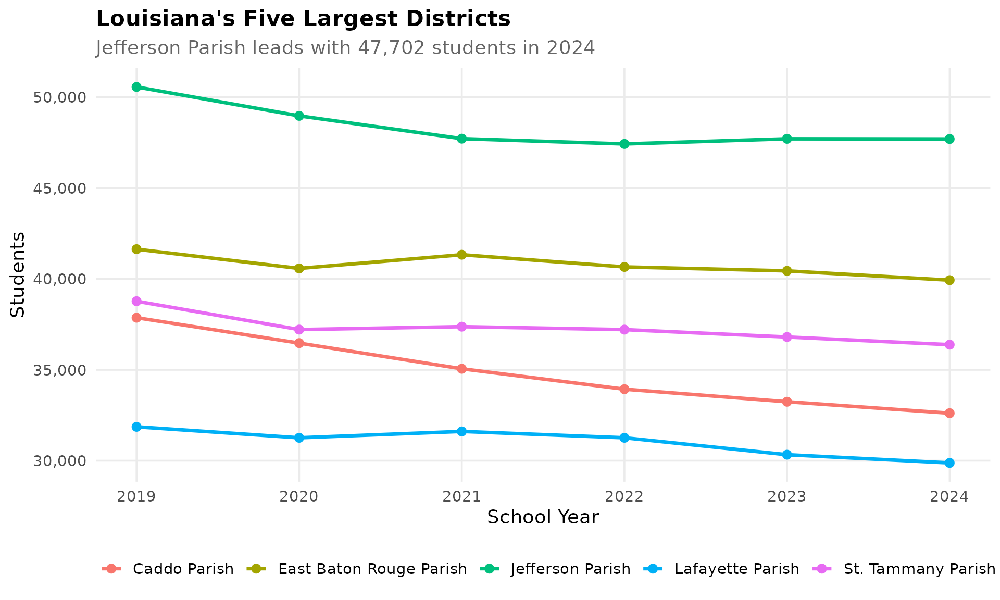
5. Caddo Parish lost 14% of its students in five years
Caddo Parish (Shreveport) dropped from 37,868 students in 2019 to 32,614 in 2024, a loss of over 5,200 students.
caddo <- enr %>%
filter(is_district, district_name == "Caddo Parish",
subgroup == "total_enrollment", grade_level == "TOTAL")
stopifnot(nrow(caddo) > 0)
caddo %>% select(end_year, district_name, n_students)
#> # A tibble: 6 × 3
#> end_year district_name n_students
#> <int> <chr> <dbl>
#> 1 2019 Caddo Parish 37868
#> 2 2020 Caddo Parish 36470
#> 3 2021 Caddo Parish 35057
#> 4 2022 Caddo Parish 33934
#> 5 2023 Caddo Parish 33243
#> 6 2024 Caddo Parish 32614
ggplot(caddo, aes(x = end_year, y = n_students)) +
geom_line(linewidth = 1.5, color = colors["total"]) +
geom_point(size = 3, color = colors["total"]) +
scale_y_continuous(labels = comma, limits = c(0, NA)) +
labs(title = "Caddo Parish (Shreveport) Enrollment Decline",
subtitle = "Lost 5,254 students (-13.9%) from 2019 to 2024",
x = "School Year", y = "Students") +
theme_readme()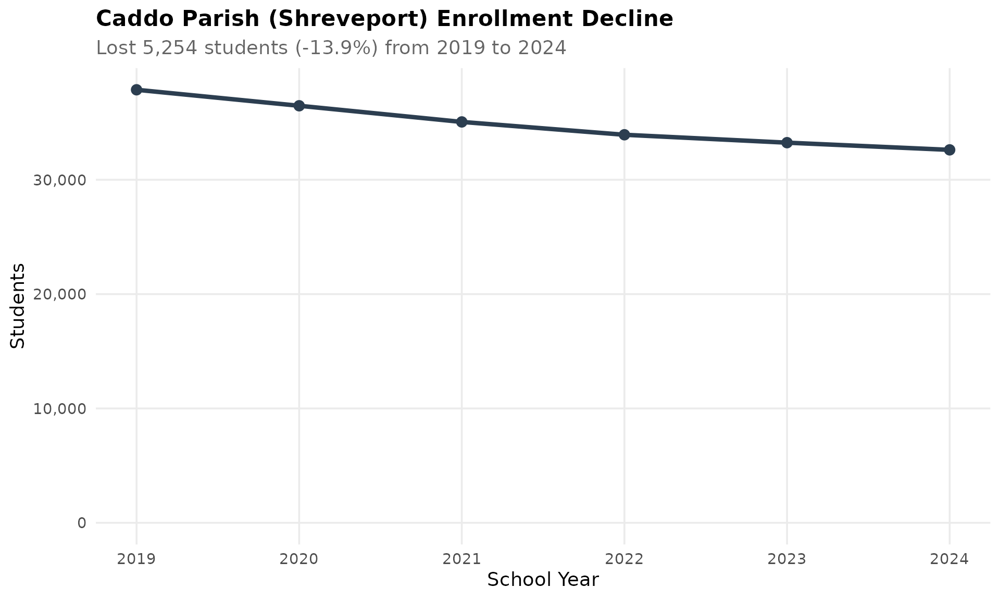
6. COVID wiped out 17% of Pre-K enrollment overnight
Pre-K dropped from 26,078 to 21,751 students between 2019 and 2020, then slowly recovered to 26,152 by 2024.
prek <- enr %>%
filter(is_state, subgroup == "total_enrollment", grade_level == "PK")
stopifnot(nrow(prek) > 0)
prek %>% select(end_year, n_students)
#> # A tibble: 6 × 2
#> end_year n_students
#> <int> <dbl>
#> 1 2019 26078
#> 2 2020 21751
#> 3 2021 24027
#> 4 2022 25969
#> 5 2023 26002
#> 6 2024 26152
ggplot(prek, aes(x = end_year, y = n_students)) +
geom_line(linewidth = 1.5, color = colors["total"]) +
geom_point(size = 3, color = colors["total"]) +
geom_vline(xintercept = 2020.5, linetype = "dashed", color = "red", alpha = 0.5) +
annotate("text", x = 2020.6, y = max(prek$n_students), label = "COVID",
hjust = 0, color = "red", alpha = 0.5) +
scale_y_continuous(labels = comma) +
labs(title = "Pre-K Enrollment Cratered During COVID",
subtitle = "-16.6% drop in 2020, full recovery by 2024",
x = "School Year", y = "Pre-K Students") +
theme_readme()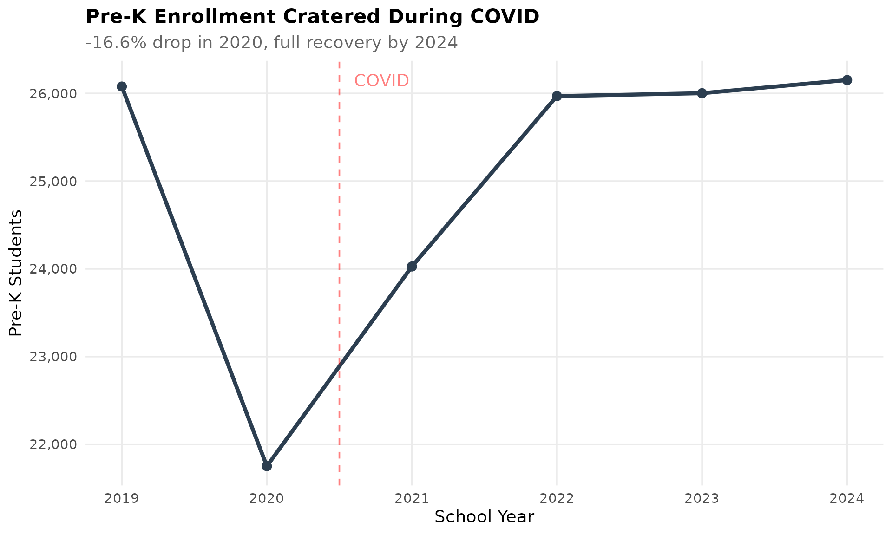
7. Kindergarten also took a COVID hit
Kindergarten enrollment fell 6.9% from 48,556 to 45,205 between 2019 and 2020, and still has not returned to pre-pandemic levels.
k_trend <- enr %>%
filter(is_state, subgroup == "total_enrollment",
grade_level %in% c("PK", "K", "01", "09")) %>%
mutate(grade_label = case_when(
grade_level == "PK" ~ "Pre-K",
grade_level == "K" ~ "Kindergarten",
grade_level == "01" ~ "Grade 1",
grade_level == "09" ~ "Grade 9"
))
stopifnot(nrow(k_trend) > 0)
k_trend %>%
filter(grade_level == "K") %>%
select(end_year, grade_label, n_students)
#> # A tibble: 6 × 3
#> end_year grade_label n_students
#> <int> <chr> <dbl>
#> 1 2019 Kindergarten 48556
#> 2 2020 Kindergarten 45205
#> 3 2021 Kindergarten 46282
#> 4 2022 Kindergarten 50345
#> 5 2023 Kindergarten 48798
#> 6 2024 Kindergarten 48084
ggplot(k_trend, aes(x = end_year, y = n_students, color = grade_label)) +
geom_line(linewidth = 1.2) +
geom_point(size = 2.5) +
geom_vline(xintercept = 2020.5, linetype = "dashed", color = "red", alpha = 0.5) +
annotate("text", x = 2020.6, y = max(k_trend$n_students), label = "COVID",
hjust = 0, color = "red", alpha = 0.5) +
scale_y_continuous(labels = comma) +
labs(title = "COVID Impact by Grade Level",
subtitle = "Youngest grades hit hardest, K still below pre-pandemic levels",
x = "School Year", y = "Students", color = "") +
theme_readme()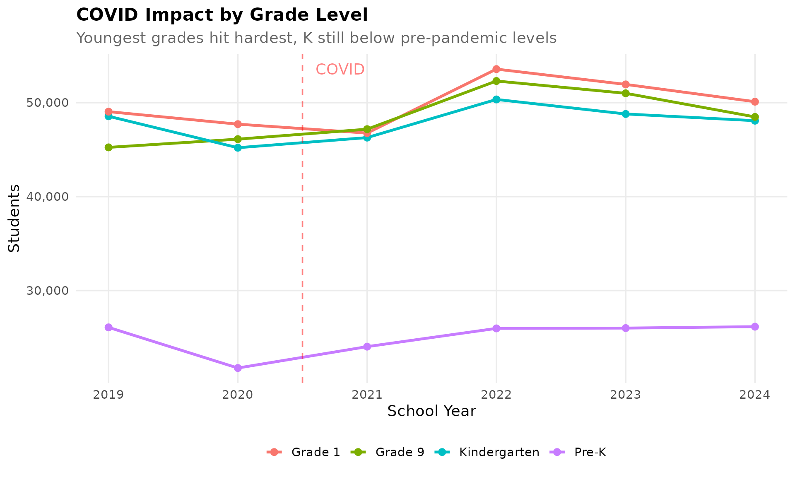
8. English learners grew from 3.9% to 5.3% of enrollment
LEP students increased from 24,908 to 35,868 between 2019 and 2024, a 44% jump tracking closely with Hispanic growth.
el <- enr %>%
filter(is_state, subgroup == "lep", grade_level == "TOTAL") %>%
left_join(state_totals, by = "end_year") %>%
mutate(pct = n_students / total * 100)
stopifnot(nrow(el) > 0)
el %>% select(end_year, n_students, pct)
#> # A tibble: 6 × 3
#> end_year n_students pct
#> <int> <dbl> <dbl>
#> 1 2019 24908 3.87
#> 2 2020 23336 3.74
#> 3 2021 25194 4.09
#> 4 2022 31939 4.66
#> 5 2023 33847 4.97
#> 6 2024 35868 5.30
ggplot(el, aes(x = end_year, y = pct)) +
geom_line(linewidth = 1.5, color = colors["total"]) +
geom_point(size = 3, color = colors["total"]) +
labs(title = "English Learners on the Rise",
subtitle = "From 3.9% to 5.3% of enrollment (2019-2024)",
x = "School Year", y = "Percent of Students") +
theme_readme()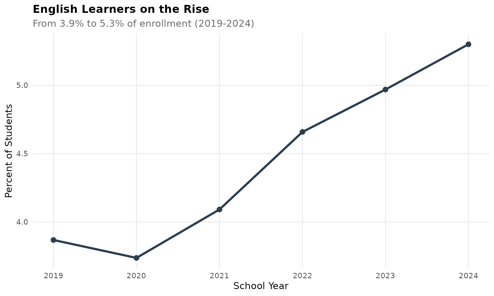
9. Seven in ten Louisiana students are economically disadvantaged
The statewide economic disadvantage rate has hovered around 70% since 2019, one of the highest rates in the nation.
econ_state <- enr %>%
filter(is_state, subgroup == "econ_disadv", grade_level == "TOTAL") %>%
left_join(state_totals, by = "end_year") %>%
mutate(pct = n_students / total * 100)
stopifnot(nrow(econ_state) > 0)
econ_state %>% select(end_year, n_students, pct)
#> # A tibble: 6 × 3
#> end_year n_students pct
#> <int> <dbl> <dbl>
#> 1 2019 436524 67.8
#> 2 2020 453025 72.5
#> 3 2021 429803 69.8
#> 4 2022 494310 72.1
#> 5 2023 494076 72.5
#> 6 2024 474402 70.1
ggplot(econ_state, aes(x = end_year, y = pct)) +
geom_line(linewidth = 1.5, color = colors["total"]) +
geom_point(size = 3, color = colors["total"]) +
scale_y_continuous(limits = c(60, 80)) +
labs(title = "Economic Disadvantage Rate in Louisiana",
subtitle = "Consistently around 70% statewide",
x = "School Year", y = "Percent Economically Disadvantaged") +
theme_readme()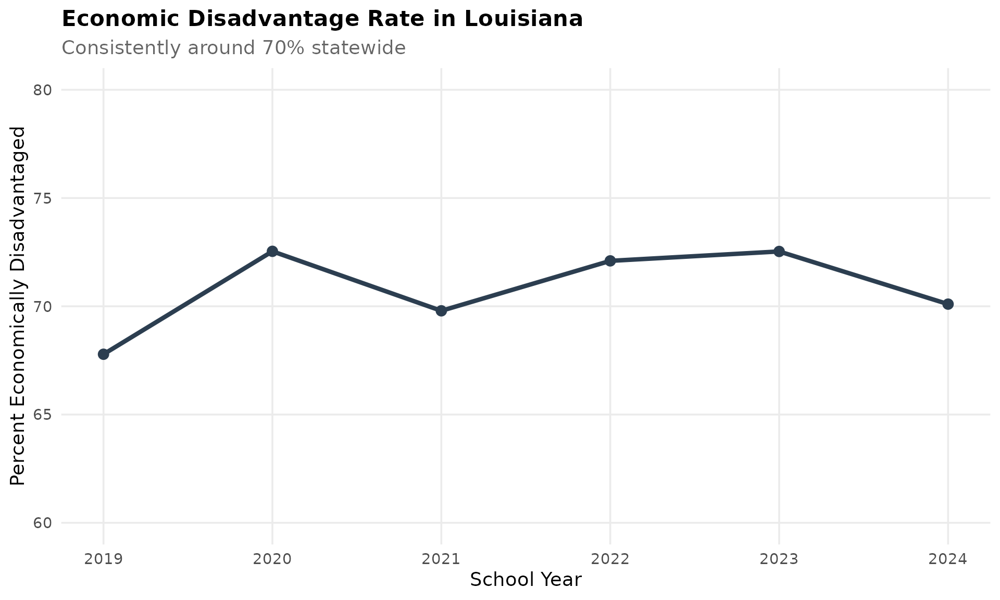
10. St. Helena Parish: 100% economically disadvantaged
St. Helena leads Louisiana with every single student classified as economically disadvantaged, followed by East Carroll (96.9%) and Tensas (95.8%).
district_totals <- enr_current %>%
filter(is_district, subgroup == "total_enrollment", grade_level == "TOTAL") %>%
select(district_name, total = n_students)
econ <- enr_current %>%
filter(is_district, subgroup == "econ_disadv", grade_level == "TOTAL") %>%
left_join(district_totals, by = "district_name") %>%
mutate(pct = n_students / total * 100) %>%
arrange(desc(pct)) %>%
head(10) %>%
mutate(district_label = reorder(district_name, pct))
stopifnot(nrow(econ) > 0)
econ %>% select(district_name, n_students, total, pct)
#> # A tibble: 10 × 4
#> district_name n_students total pct
#> <chr> <dbl> <dbl> <dbl>
#> 1 St. Helena Parish 1002 1002 100
#> 2 Special School District 291 299 97.3
#> 3 East Carroll Parish 715 738 96.9
#> 4 Tensas Parish 298 311 95.8
#> 5 Madison Parish 1078 1134 95.1
#> 6 Thrive Academy 152 161 94.4
#> 7 City of Bogalusa School District 1718 1822 94.3
#> 8 City of Baker School District 927 999 92.8
#> 9 Red River Parish 1143 1251 91.4
#> 10 Natchitoches Parish 4230 4829 87.6
ggplot(econ, aes(x = district_label, y = pct)) +
geom_col(fill = colors["total"]) +
coord_flip() +
labs(title = "Highest Poverty Districts in Louisiana",
subtitle = "St. Helena Parish reports 100% economically disadvantaged",
x = "", y = "Percent Economically Disadvantaged") +
theme_readme()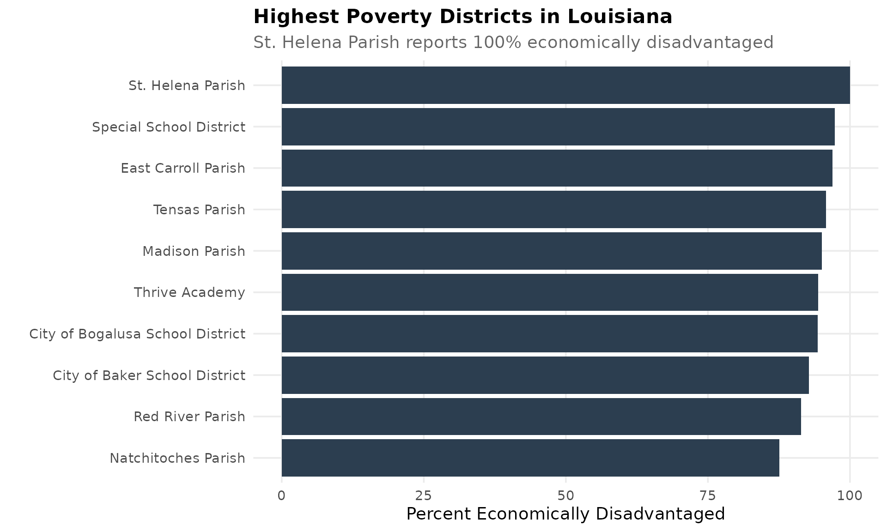
11. Delta parishes are emptying out
East Carroll (-20.8%), Tensas (-22.6%), and Madison (-4.4%) have shed students steadily since 2019.
delta_names <- c("Tensas Parish", "East Carroll Parish", "Madison Parish")
delta_trend <- enr %>%
filter(is_district, district_name %in% delta_names,
subgroup == "total_enrollment", grade_level == "TOTAL")
stopifnot(nrow(delta_trend) > 0)
delta_trend %>% select(end_year, district_name, n_students)
#> # A tibble: 18 × 3
#> end_year district_name n_students
#> <int> <chr> <dbl>
#> 1 2019 East Carroll Parish 932
#> 2 2019 Madison Parish 1186
#> 3 2019 Tensas Parish 402
#> 4 2020 East Carroll Parish 836
#> 5 2020 Madison Parish 1102
#> 6 2020 Tensas Parish 355
#> 7 2021 East Carroll Parish 778
#> 8 2021 Madison Parish 1163
#> 9 2021 Tensas Parish 334
#> 10 2022 East Carroll Parish 770
#> 11 2022 Madison Parish 1223
#> 12 2022 Tensas Parish 331
#> 13 2023 East Carroll Parish 751
#> 14 2023 Madison Parish 1244
#> 15 2023 Tensas Parish 328
#> 16 2024 East Carroll Parish 738
#> 17 2024 Madison Parish 1134
#> 18 2024 Tensas Parish 311
delta_combined <- delta_trend %>%
group_by(end_year) %>%
summarize(n_students = sum(n_students, na.rm = TRUE), .groups = "drop")
delta_combined
#> # A tibble: 6 × 2
#> end_year n_students
#> <int> <dbl>
#> 1 2019 2520
#> 2 2020 2293
#> 3 2021 2275
#> 4 2022 2324
#> 5 2023 2323
#> 6 2024 2183
ggplot(delta_trend, aes(x = end_year, y = n_students, color = district_name)) +
geom_line(linewidth = 1.2) +
geom_point(size = 2.5) +
scale_y_continuous(labels = comma) +
labs(title = "Delta Parishes Losing Students",
subtitle = "Tensas, East Carroll, and Madison combined lost 13.4% since 2019",
x = "School Year", y = "Students", color = "") +
theme_readme()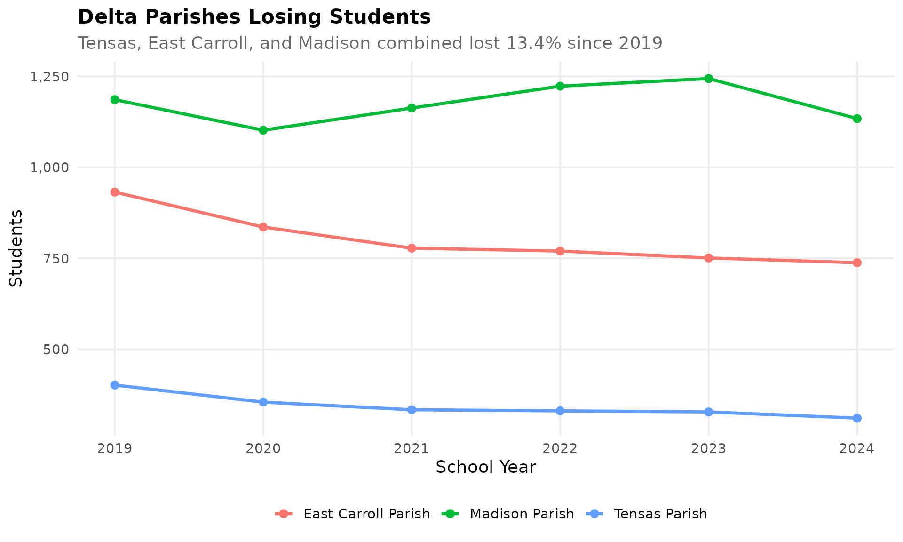
12. Calcasieu Parish never recovered from Hurricane Laura
Calcasieu Parish (Lake Charles) lost 11.3% of enrollment in a single year (2019-2020) after Hurricane Laura devastated southwest Louisiana.
calcasieu <- enr %>%
filter(is_district, district_name == "Calcasieu Parish",
subgroup == "total_enrollment", grade_level == "TOTAL")
stopifnot(nrow(calcasieu) > 0)
calcasieu %>% select(end_year, district_name, n_students)
#> # A tibble: 6 × 3
#> end_year district_name n_students
#> <int> <chr> <dbl>
#> 1 2019 Calcasieu Parish 31879
#> 2 2020 Calcasieu Parish 28265
#> 3 2021 Calcasieu Parish 27681
#> 4 2022 Calcasieu Parish 27871
#> 5 2023 Calcasieu Parish 28392
#> 6 2024 Calcasieu Parish 28623
ggplot(calcasieu, aes(x = end_year, y = n_students)) +
geom_line(linewidth = 1.5, color = colors["total"]) +
geom_point(size = 3, color = colors["total"]) +
geom_vline(xintercept = 2020, linetype = "dashed", color = "red", alpha = 0.5) +
annotate("text", x = 2020.1, y = 31500, label = "Hurricane Laura",
hjust = 0, color = "red", alpha = 0.5) +
scale_y_continuous(labels = comma, limits = c(0, NA)) +
labs(title = "Calcasieu Parish (Lake Charles)",
subtitle = "Lost 3,600 students after Hurricane Laura, partial recovery",
x = "School Year", y = "Students") +
theme_readme()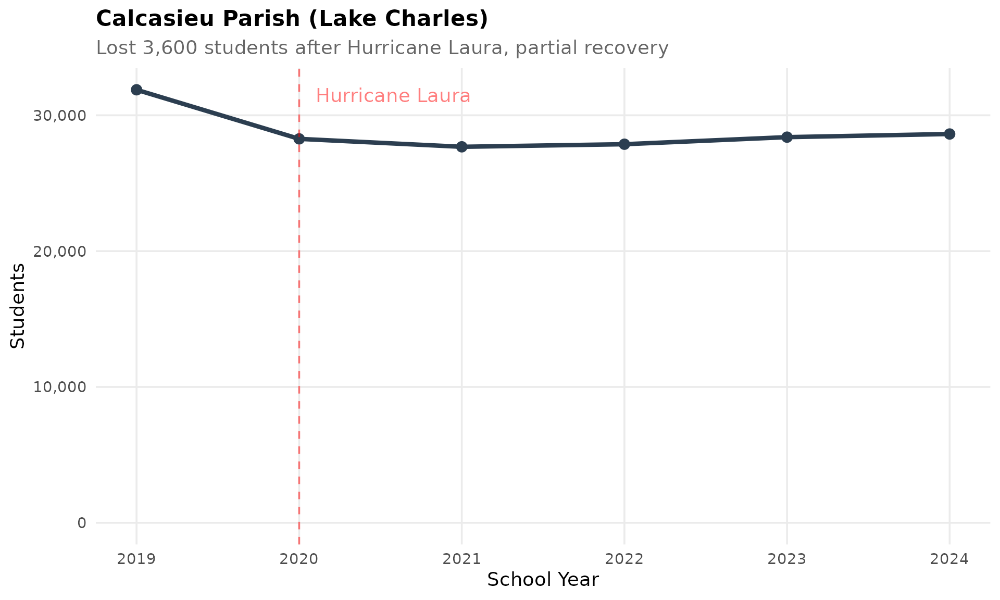
13. Jefferson Parish: the slow suburban slide
Louisiana’s largest district has been quietly losing students, dropping from 50,566 in 2019 to 47,702 in 2024.
jefferson <- enr %>%
filter(is_district, district_name == "Jefferson Parish",
subgroup == "total_enrollment", grade_level == "TOTAL")
stopifnot(nrow(jefferson) > 0)
jefferson %>% select(end_year, district_name, n_students)
#> # A tibble: 6 × 3
#> end_year district_name n_students
#> <int> <chr> <dbl>
#> 1 2019 Jefferson Parish 50566
#> 2 2020 Jefferson Parish 48974
#> 3 2021 Jefferson Parish 47720
#> 4 2022 Jefferson Parish 47429
#> 5 2023 Jefferson Parish 47712
#> 6 2024 Jefferson Parish 47702
ggplot(jefferson, aes(x = end_year, y = n_students)) +
geom_line(linewidth = 1.5, color = colors["total"]) +
geom_point(size = 3, color = colors["total"]) +
scale_y_continuous(labels = comma, limits = c(0, NA)) +
labs(title = "Jefferson Parish - Largest but Shrinking",
subtitle = "Lost 2,864 students (-5.7%) from 2019 to 2024",
x = "School Year", y = "Students") +
theme_readme()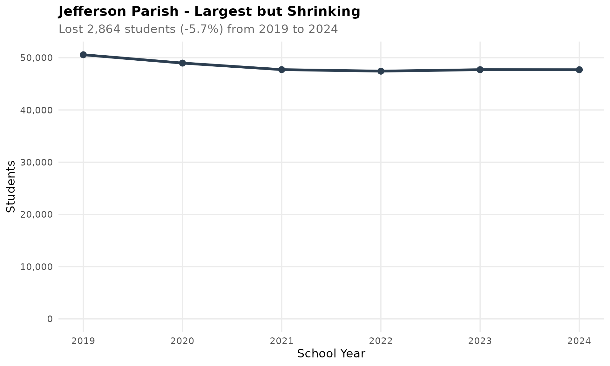
14. The suburban corridor holds steady
Ascension, Livingston, and St. Tammany parishes along the I-10/I-12 corridor are among the few growing districts.
i10 <- c("Livingston Parish", "Ascension Parish", "St. Tammany Parish")
i10_trend <- enr %>%
filter(is_district, district_name %in% i10,
subgroup == "total_enrollment", grade_level == "TOTAL")
stopifnot(nrow(i10_trend) > 0)
i10_trend %>%
select(end_year, district_name, n_students) %>%
tidyr::pivot_wider(names_from = district_name, values_from = n_students)
#> # A tibble: 6 × 4
#> end_year `Ascension Parish` `Livingston Parish` `St. Tammany Parish`
#> <int> <dbl> <dbl> <dbl>
#> 1 2019 23409 26148 38774
#> 2 2020 23455 26044 37214
#> 3 2021 23843 26540 37374
#> 4 2022 24041 26954 37212
#> 5 2023 24138 27105 36806
#> 6 2024 24076 26852 36384
ggplot(i10_trend, aes(x = end_year, y = n_students, color = district_name)) +
geom_line(linewidth = 1.2) +
geom_point(size = 2.5) +
scale_y_continuous(labels = comma) +
labs(title = "I-10/I-12 Corridor Parishes",
subtitle = "Ascension and Livingston growing; St. Tammany stable",
x = "School Year", y = "Students", color = "") +
theme_readme()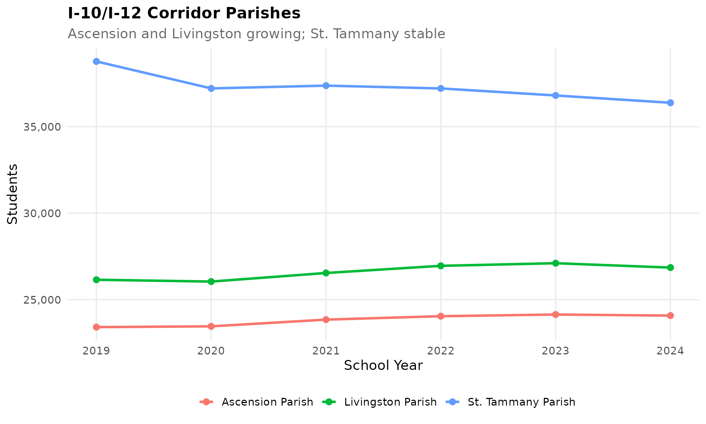
15. Gender balance is remarkably stable
Louisiana’s 51.2% male / 48.8% female split has barely budged across all six years of data.
gender <- enr %>%
filter(is_state, grade_level == "TOTAL",
subgroup %in% c("male", "female")) %>%
left_join(state_totals, by = "end_year") %>%
mutate(pct = n_students / total * 100)
stopifnot(nrow(gender) > 0)
gender %>%
filter(end_year == 2024) %>%
select(subgroup, n_students, pct)
#> # A tibble: 2 × 3
#> subgroup n_students pct
#> <chr> <dbl> <dbl>
#> 1 male 346497 51.2
#> 2 female 330254 48.8
ggplot(gender, aes(x = end_year, y = pct, color = subgroup)) +
geom_line(linewidth = 1.2) +
geom_point(size = 2.5) +
scale_color_manual(values = c("male" = "#3498DB", "female" = "#E74C3C"),
labels = c("Female", "Male")) +
scale_y_continuous(limits = c(45, 55)) +
labs(title = "Gender Balance in Louisiana Schools",
subtitle = "Consistently 51.2% male / 48.8% female since 2019",
x = "School Year", y = "Percent of Students", color = "") +
theme_readme()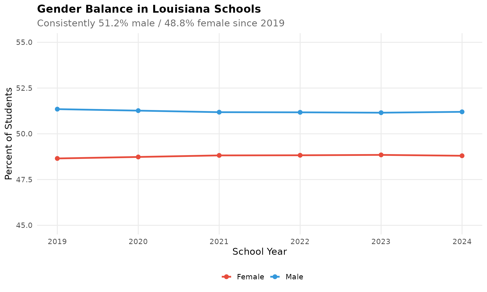
Session Info
sessionInfo()
#> R version 4.5.2 (2025-10-31)
#> Platform: x86_64-pc-linux-gnu
#> Running under: Ubuntu 24.04.3 LTS
#>
#> Matrix products: default
#> BLAS: /usr/lib/x86_64-linux-gnu/openblas-pthread/libblas.so.3
#> LAPACK: /usr/lib/x86_64-linux-gnu/openblas-pthread/libopenblasp-r0.3.26.so; LAPACK version 3.12.0
#>
#> locale:
#> [1] LC_CTYPE=C.UTF-8 LC_NUMERIC=C LC_TIME=C.UTF-8
#> [4] LC_COLLATE=C.UTF-8 LC_MONETARY=C.UTF-8 LC_MESSAGES=C.UTF-8
#> [7] LC_PAPER=C.UTF-8 LC_NAME=C LC_ADDRESS=C
#> [10] LC_TELEPHONE=C LC_MEASUREMENT=C.UTF-8 LC_IDENTIFICATION=C
#>
#> time zone: UTC
#> tzcode source: system (glibc)
#>
#> attached base packages:
#> [1] stats graphics grDevices utils datasets methods base
#>
#> other attached packages:
#> [1] scales_1.4.0 dplyr_1.2.0 ggplot2_4.0.2 laschooldata_0.1.0
#>
#> loaded via a namespace (and not attached):
#> [1] tidyr_1.3.2 rappdirs_0.3.4 sass_0.4.10 utf8_1.2.6
#> [5] generics_0.1.4 stringi_1.8.7 digest_0.6.39 magrittr_2.0.4
#> [9] evaluate_1.0.5 grid_4.5.2 timechange_0.4.0 RColorBrewer_1.1-3
#> [13] fastmap_1.2.0 cellranger_1.1.0 jsonlite_2.0.0 httr_1.4.8
#> [17] purrr_1.2.1 codetools_0.2-20 textshaping_1.0.4 jquerylib_0.1.4
#> [21] cli_3.6.5 rlang_1.1.7 withr_3.0.2 cachem_1.1.0
#> [25] yaml_2.3.12 otel_0.2.0 tools_4.5.2 curl_7.0.0
#> [29] vctrs_0.7.1 R6_2.6.1 lifecycle_1.0.5 lubridate_1.9.5
#> [33] snakecase_0.11.1 stringr_1.6.0 fs_1.6.6 htmlwidgets_1.6.4
#> [37] ragg_1.5.0 janitor_2.2.1 pkgconfig_2.0.3 desc_1.4.3
#> [41] pkgdown_2.2.0 pillar_1.11.1 bslib_0.10.0 gtable_0.3.6
#> [45] glue_1.8.0 systemfonts_1.3.1 xfun_0.56 tibble_3.3.1
#> [49] tidyselect_1.2.1 knitr_1.51 farver_2.1.2 htmltools_0.5.9
#> [53] rmarkdown_2.30 labeling_0.4.3 compiler_4.5.2 S7_0.2.1
#> [57] readxl_1.4.5